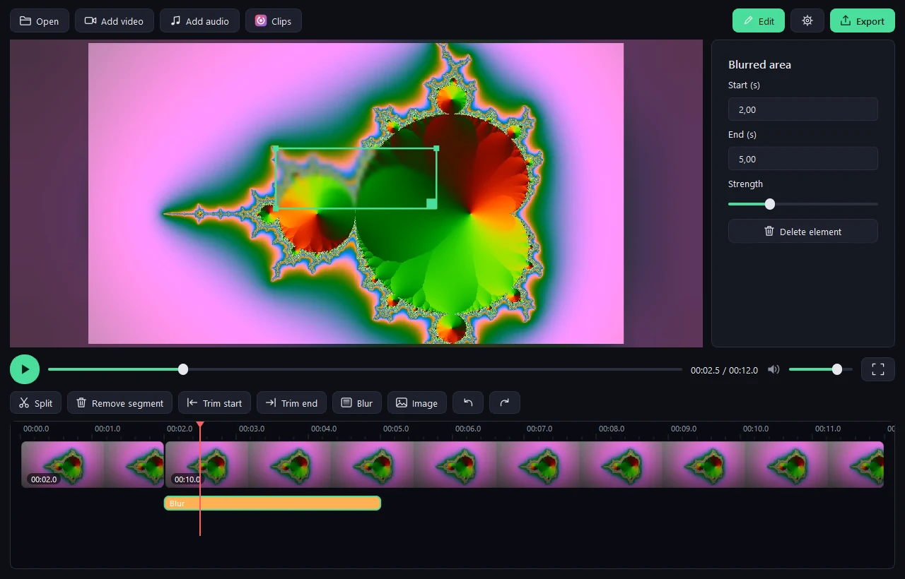

Cutline is a simple video editor. Open a clip, cut it, blur what needs hiding, add music, export. No projects, no import, no clutter – just the tools you actually use. And when you don't feel like editing, it's a fast, clean video player too.

How it works
No accounts, no cloud, no learning curve. Everything happens on your computer.
Drag a video into the window. It plays instantly – no import, no project setup.
Press E for the timeline. Split, trim, change speed, blur a face, add a logo or some music.
Choose resolution, frame rate and quality. One click, and your new video is ready.
Features
A short list of things that are done properly.
Hide faces, number plates or text. Drag the area, resize it, set how long it stays – and see the actual blur while you edit, not just a box.
Slow down or speed up any part, from 0.1× to 16×.
See your video right on the timeline and find the spot fast.
Insert more clips – even in other sizes – add logos, and put mp3 music on its own track.
Only options that fit your source are offered, so files never grow for nothing.
Asked once on first start, changeable any time.
One key per action. Space plays, arrows skip 5 seconds, F11 shows only the video.
Uses your graphics card to encode (NVIDIA, Intel, AMD, Apple) and falls back to a quick software encoder.
Set Cutline as your default app for videos: it starts instantly, plays mp4, mov and mkv smoothly, and stays out of the way. Fullscreen with F11, click to pause, arrow keys to skip, soft ambient light around the picture. Editing is only one key away – press E whenever you want it.
Originals are never changed. Nothing is uploaded. Open source under the MIT license.
Themes
Seven looks, from calm dark to full Windows XP. Switch any time in the settings.
Download
Free for everyone. Pick your system – every file comes straight from GitHub Releases.
On macOS the app is not notarized: right-click Cutline → Open the first time. Not sure which Mac you have? Apple menu → About This Mac.
FAQ
Yes. Cutline is open source under the MIT license – free to use, share and change.
Yes. Install it with the installer and it shows up in the “Open with” menu of your videos, where you can also make it the default. It opens instantly, and editing only starts when you press E.
Never. Your files stay untouched. Cutline only writes a new file when you export.
mp4, mov, mkv, webm, avi and more. Exports are mp4 (H.264 + AAC), which plays everywhere.
Windows and macOS builds include everything. The .deb and Arch packages pull in Qt and ffmpeg from your distribution automatically; the tar.gz needs Qt 6 installed.